Next: Time shifts and phase
Up: Complex numbers
Previous: Complex numbers
Contents
Index
Recall the formula for a (real-valued) sinusoid from Page
![[*]](file:/usr/local/share/lib/latex2html/icons/crossref.png) :
:
This is a sequence of cosines of angles (called phases) which increase
arithmetically
with the sample number  . The cosines are all adjusted by the factor
. The cosines are all adjusted by the factor  .
We can now rewrite this as the real part of a much simpler and easier to
manipulate sequence of complex numbers, by using the properties of their
arguments and magnitudes.
.
We can now rewrite this as the real part of a much simpler and easier to
manipulate sequence of complex numbers, by using the properties of their
arguments and magnitudes.
Figure 7.2:
The powers of a complex number  with 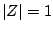, and the same
sequence multiplied by a constant 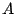.
with 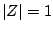, and the same
sequence multiplied by a constant 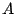.
| 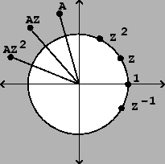 |
Suppose that a complex number happens to have magnitude one and
argument  , so that
it can be written as:
, so that
it can be written as:
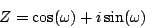
Then for any integer , the number  must have magnitude one as well
(because magnitudes multiply) and argument 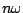 (because arguments add).
So,
must have magnitude one as well
(because magnitudes multiply) and argument 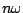 (because arguments add).
So,
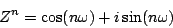
This is also true for negative values of , so for example,
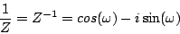
Figure 7.2 shows graphically how the powers of wrap around
the unit circle, which is the set of all complex numbers of magnitude one.
They form a geometric sequence:
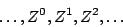
and taking the real part of each term we get a real sinusoid with
initial phase zero and amplitude one:
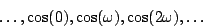
Furthermore, suppose we multiply the elements of the sequence by some (complex)
constant with magnitude and argument  . This gives
. This gives
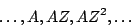
The magnitudes are all and the argument of the th term is
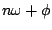, so the sequence is equal to
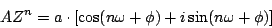
and the real part is just the real-valued sinusoid:
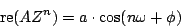
The complex number encodes both the real amplitude
and the initial phase ; the unit-magnitude complex
number controls the frequency which is just its argument .
Figure 7.2 also shows the sequence
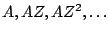;
in effect this is the same sequence as
 , but amplified and
rotated according to the amplitude and initial phase. In a complex
sinusoid of this form, is called the
complex amplitude.
, but amplified and
rotated according to the amplitude and initial phase. In a complex
sinusoid of this form, is called the
complex amplitude.
Using complex numbers to represent the amplitudes and phases of sinusoids can
clarify manipulations that otherwise might seem unmotivated. For instance,
suppose we want to know the amplitude and phase of the sum of two sinusoids
with the same frequency. In the language of this chapter, we let the two
sinusoids be written as:
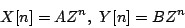
where and  encode the phases and amplitudes of the two signals.
The sum is then equal to:
encode the phases and amplitudes of the two signals.
The sum is then equal to:
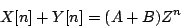
which is a sinusoid whose amplitude equals 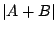 and whose phase equals
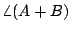. This is clearly a much easier way to manipulate amplitudes
and phases than using properties of sines and cosines. Eventually, of course,
we will take the real part of the result; this can usually be left to the
end of whatever we're doing.
Next: Time shifts and phase
Up: Complex numbers
Previous: Complex numbers
Contents
Index
Miller Puckette
2006-12-30